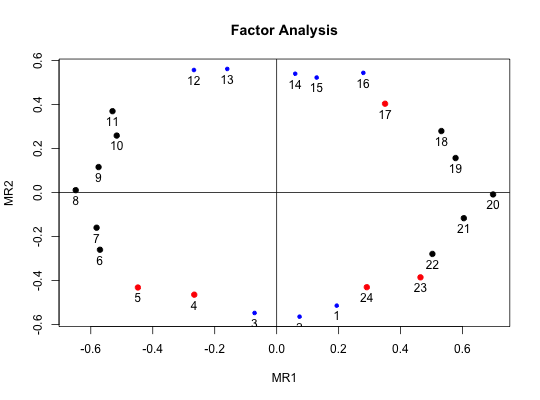
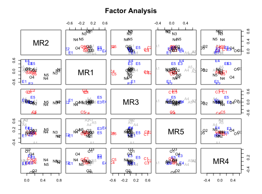
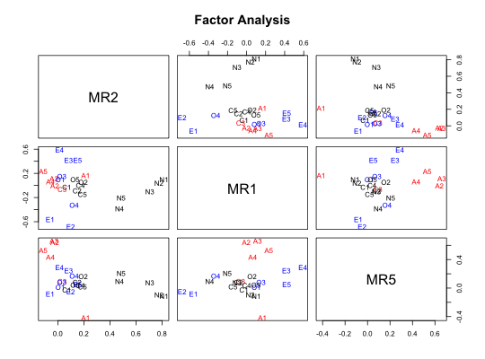

Cluster analysis and factor analysis are procedures for grouping items in terms of a smaller number of (latent) factors or (observed) clusters. Graphical presentations of clusters typically show tree structures, although they can be represented in terms of item by cluster correlations.
Cluster.plot plots items by their cluster loadings (taken, e.g., from ICLUST) or factor loadings (taken, eg., from fa). Cluster membership may be assigned apriori or may be determined in terms of the highest (absolute) cluster loading for each item.
If the input is an object of class "kmeans", then the cluster centers are plotted.
cluster.plot(ic.results, cluster = NULL, cut = 0, labels=NULL, title = "Cluster plot",pch=18,pos,show.points=TRUE,choose=NULL,...) fa.plot(ic.results, cluster = NULL, cut = 0, labels=NULL,title, jiggle=FALSE,amount=.02,pch=18,pos,show.points=TRUE,choose=NULL,...) factor.plot(ic.results, cluster = NULL, cut = 0, labels=NULL,title,jiggle=FALSE, amount=.02,pch=18,pos,show.points=TRUE,...) #deprecated
| ic.results | A factor analysis or cluster analysis output including the loadings, or a matrix of item by cluster correlations. Or the output from a kmeans cluster analysis. |
|---|---|
| cluster | A vector of cluster membership |
| cut | Assign items to clusters if the absolute loadings are > cut |
| labels | If row.names exist they will be added to the plot, or, if they don't, labels can be specified. If labels =NULL, and there are no row names, then variables are labeled by row number.) |
| title | Any title |
| jiggle | When plotting with factor loadings that are almost identical, it is sometimes useful to "jiggle" the points by jittering them. The default is to not jiggle. |
| amount | if jiggle=TRUE, then how much should the points be jittered? |
| pch | factor and clusters are shown with different pch values, starting at pch+1 |
| pos | Position of the text for labels for two dimensional plots. 1=below, 2 = left, 3 = above, 4= right |
| show.points | When adding labels to the points, should we show the points as well as the labels. For many points, better to not show them, just the labels. |
| choose | Specify the factor/clusters to plot |
| ... | Further options to plot |
Results of either a factor analysis or cluster analysis are plotted. Each item is assigned to its highest loading factor, and then identified by variable name as well as cluster (by color). The cluster assignments can be specified to override the automatic clustering by loading. Both of these functions may be called directly or by calling the generic plot function. (see example).
Graphical output is presented.
ICLUST, ICLUST.graph, fa.graph, plot.psych
plot(f5,labels=colnames(bfi)[1:25],show.points=FALSE,choose=c(1,2,4))